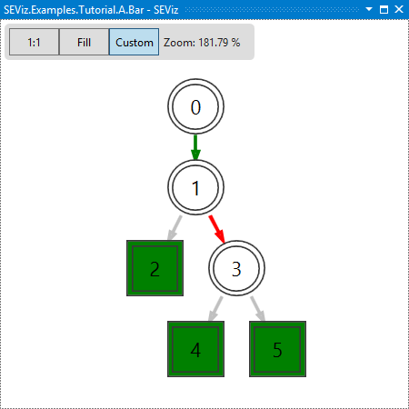

SEViz (Symbolic Execution VisualIZer) is a tool for visualizing symbolic execution-based test generation
User manual
Requirements
Building
- Download or clone the repository.
- Start VS2015 Enterprise as Administrator.
- Open Visual Studio solution found in the Source folder.
- Build the whole solution. This triggers two pre-build events:
- Downloading the required NuGet packages.
- Invoking the PowerShell script that copies the necessary Pex assemblies into the corresponding folder.
Installation
- Viewer: Search for the SEViz.Integration.vsix file and install the Visual Studio extension to the desired VS2015 Enterprise installation.
- Monitoring: Add the SEViz.Monitoring.dll as reference to a Unit Test project, where IntelliTest PUTs are created.
Tutorial and feature showcase
1. Opening the solution
In the first step, you have to unpack the downloaded zip file, which contains the project SEViz.Examples.Tutorials.
Open the solution in Visual Studio. The solution contains a Unit Test project and the necessary parameterized unit tests.
In this tutorial, the method Foo of class A is the unit under test.
2. Attributing the parameterized test
Our tool is working with .NET attributes, which can be added to parameterized test methods. To make SEViz able to monitor the execution, you have to put the [SEViz] attribute to the method.
In the current example, the namespace of method under test is SEViz.Examples.Tutorial.A.Foo. SEViz features indicating exits/entries from/to the unit under test by coloring the edges. Red edges indicate exits, while green edges mark entries into the unit
3. Running IntelliTest
Right-click in the parameterized unit test and select Run IntelliTest. This triggers the symbolic execution-based test generation and its monitoring by SEViz.
When the execution of IntelliTest finishes, an alert window will pop up, indicating that a new symbolic execution graph is available for visualization.
4. Visualizing the execution
Clicking on OK in the popup window will trigger the SEViz window to appear loaded with the symbolic execution graph.

5. Features of SEViz
- Clicking on a node will show its details in the Properties window.
- Double-clicking on a node will select the corresponding source code line.
- Right-clicking on a leaf node will select the nodes involved in the execution which was ended in that leaf.
- Right-clicking on a non-leaf node will collapse the subtree under the node.
- Right-clicking on a collapsed node will expand the subtree.
- Selecting a source code line, and selecting Tools -> Show in SEViz will select the corresponding node in the symbolic execution tree.